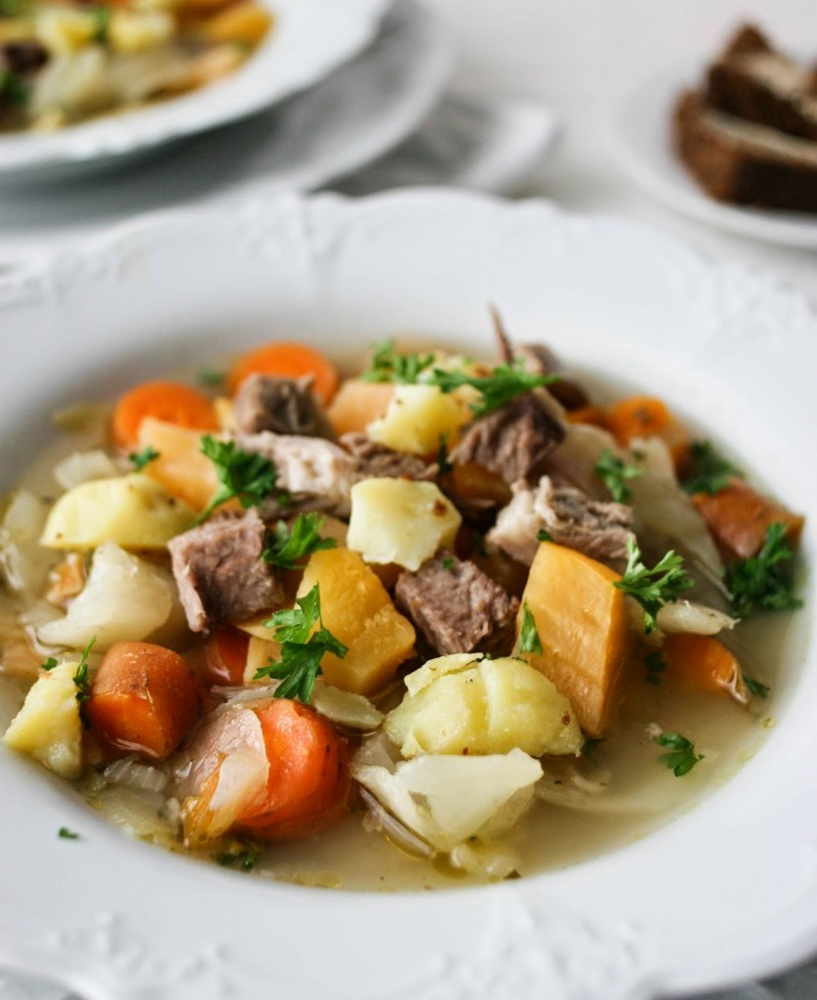

ICELANDIC LAMB SOUP (KJOTSUPA)
One of Iceland's most important dishes, Kjotsupa is a simple lamb soup made with winter root vegetables. It is a straightforward recipe that reflects the Nordic culture and the practice of cooking with what is in season and on hand. Truly authentic Kjotsupa has very little seasoning except for salt and pepper; however, this version includes thyme and oregano, bringing a little earthiness to the soup.

Ingredients:
- 2 tablespoons of olive oil
- 1 teaspoon finely chopped garlic
- 3 pounds lamb, on the bone (thick chops or shoulder)
- 1 medium onion, sliced
- 1/3 cup brown rice or rolled oats
- 6 cups of water
- 1/2 teaspoon dried thyme
- 1/2 teaspoon dried oregano/li>
- 1/2 cabbage, roughly chopped
- 3 carrots, diced into 1/2 inch pieces
- 1/2 rutabaga, uniformly diced
- 4 potatoes (scrubbed well and diced into uniform 1/2 inch pieces)
- Salt and pepper to taste
Preparation
- Gather the ingredients.
- In a large pot or dutch oven, heat the olive oil over medium heat and briefly saute' the garlic for 1 to 2 minutes (do not brown). Add the lamb pieces and brown on all sides.
- Add the sliced onion to the pot and saute' for about 1 minute, then pour in the brown rice and water. Raise the heat to high, bringing the soup to a low boil; allow to boil for 5 minutes, skimming away the froth as it rises.
- Reduce the heat to medium, stir in the dried thyme and oregano, cover the pot, and cook for 40 minutes.
- Add the cabbage, carrots, rutabaga, cauliflower (if using), and diced potatoes. Cook, covered, for an additional 20 minutes, or until the vegetables are fork-tender.
- Remove the meat and bones from the pot, chop the meat coarsely, and then return to the soup. Warm for an additional 5 minutes.
- Season with salt and pepper, serve, and enjoy.
return to home page